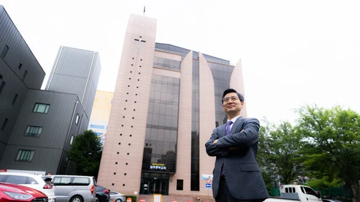
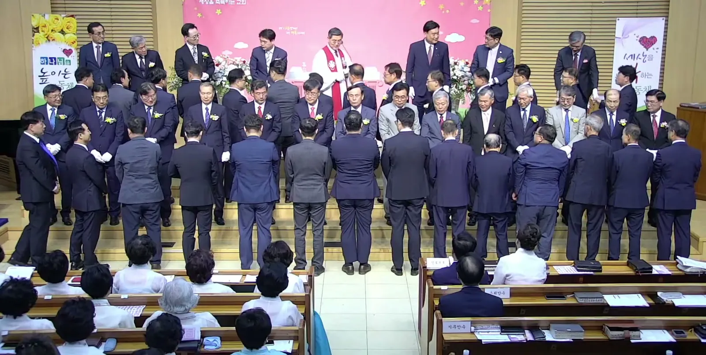
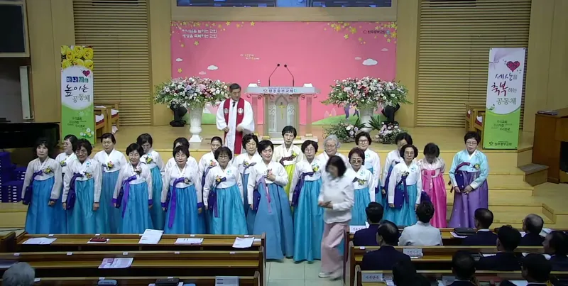
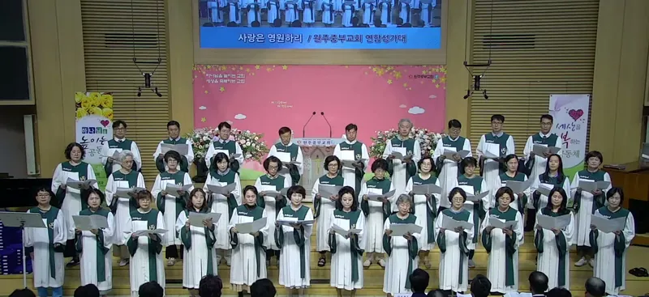
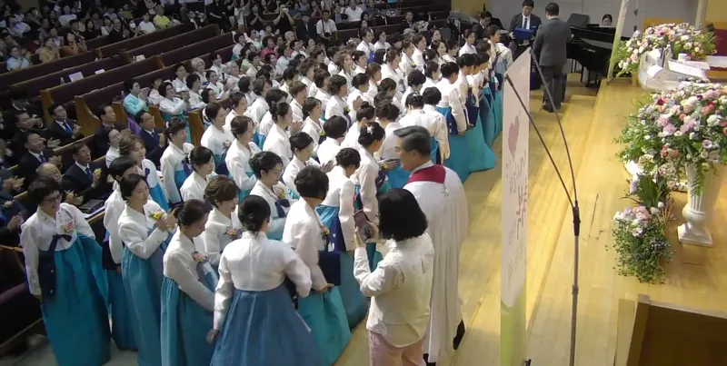
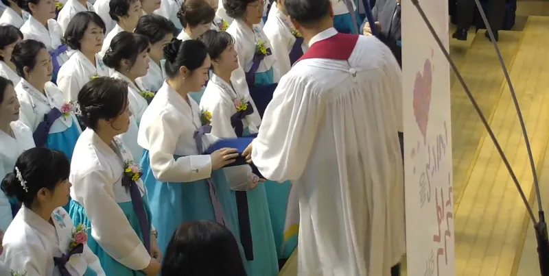
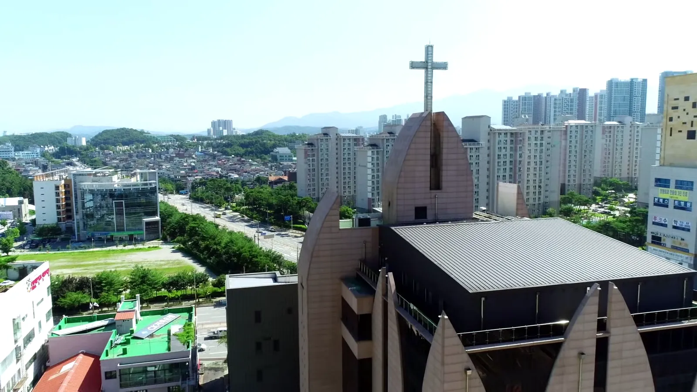

1960
01 · 시작
한 가정에서 드린
첫 예배
1960년 6월 12일, 원주중부교회가 세워졌습니다. ‘하나님 중심, 성경 중심, 교회 중심’의 믿음과 삶의 공동체를 소망하며 시작한 교회였습니다. 그 출발은 한 가정에서 드린 작은 예배였습니다.
출처 · 기독신문(2025. 8. 19.), CTS 교회행전 167회(2018)

원주중부교회 신앙유산 기록관 · 설립 70주년을 향하여
한 가정의 예배로 시작된 교회가 원주를 품는 교회가 되었습니다. 그 시간을 성도들의 목소리로 기록합니다.
SCROLL프롤로그 Since 1960
1960년 6월 12일 세워진 원주중부교회가 올해로 66년째 예배를 이어 가고 있습니다. 명절이면 고속도로 나들목에 서고, 봄이면 원주천을 걷고, 성탄이면 이웃에게 쌀을 나누는 교회. 그 이야기는 지금도 쓰이고 있습니다.
이 기록관은 CTS기독교TV 강원방송과 원주중부교회가 함께하는 신앙유산 기록 사역의 첫 장입니다. 성도들의 목소리와 장면을 모아 설립 70주년까지 이어 갑니다.
하나님을 높이는 교회,원주중부교회가 처음부터 지켜 온 영구 비전
세상을 축복하는 교회
한눈에 보는 원주중부교회 1960 ~ 2030
지금까지 확인된 걸음입니다. 1960년부터 2003년까지의 자리는 교회 연혁과 성도들의 기억으로 채워 갑니다.
출처 · 기독신문(2025), 빛과소금뉴스(2023·2026), CTS뉴스(2026), 김미열 목사 인터뷰(2015). 교회 공식 연혁 확인 전 시안입니다.
교회의 이야기 Five Scenes
1960년 6월 12일, 원주중부교회가 세워졌습니다. ‘하나님 중심, 성경 중심, 교회 중심’의 믿음과 삶의 공동체를 소망하며 시작한 교회였습니다. 그 출발은 한 가정에서 드린 작은 예배였습니다.
출처 · 기독신문(2025. 8. 19.), CTS 교회행전 167회(2018)
설립부터 2003년까지 네 분의 담임목사가 교회를 섬겼습니다. 3대 박원규 목사를 비롯한 선대 목회자들과 성도들이 옛 예배당에서 교회의 터를 닦았습니다. 1999년 장로로 세워져 24년을 섬기고 원로장로가 된 이인호 장로처럼, 수십 년을 한자리에서 섬긴 이들이 오늘의 교회를 만들었습니다.


2003년 5월 22일, 김미열 목사가 제5대 담임목사로 부임했습니다. 문막에서 나고 원주에서 고등학교를 다니던 시절 이 교회에 출석했던 그는, 안산반월교회에서 20년을 섬긴 뒤 담임목사가 공석이던 교회의 부탁으로 강단에 섰고 그 인연으로 부임했습니다.
“고향교회 같은 곳에서 목회하는 것이 맞는지 고민이 컸지만, 지금으로서는 너무 좋은 판단이었다.”김미열 목사, 2015년 인터뷰
부임 이듬해 건축을 시작해 2006년 무실동에 지금의 예배당을 세웠습니다. 하늘을 향해 겹겹이 솟은 예배당은 무실동의 풍경이 되었고, 이곳에서 주일마다 다섯 번의 예배가 드려집니다.
출처 · 기독신문(2025. 8. 19.), 김미열 목사 인터뷰(2015) · 영상 CTS 강원방송 항공 촬영
2026년 6월 13일, 설립 66주년을 기념해 장로 1명, 안수집사 28명, 권사 65명, 명예권사 11명이 임직했습니다. 교회는 예배당 가까이에 예수가족센터(종합섬김센터)를 준비하며 설립 70주년을 바라봅니다.
출처 · 빛과소금뉴스(2026. 6. 13.), 개혁타임즈(2026. 6. 24.), 기독신문(2025. 8. 19.)
목소리 Voices of Jungbu
유치부 아이부터 원로장로까지, 같은 질문에 원주중부교회 사람들이 답했습니다. 카드를 누르면 그 대답을 직접 들을 수 있습니다.
영상 · 원주중부교회 16차 중부가족행복축제 홍보영상(2026. 5.) · 직분은 촬영 당시 기준

목자 Senior Pastor
원주고등학교와 총신대학교 기독교교육과, 총신대학교 신학대학원을 졸업했습니다. 대한예수교장로회(합동) 강원노회장과 총신대학교 총동창회장을 지냈고, 2026년 강원특별자치도기독교총연합회 대표회장을 맡았습니다.
“복음전도와 제자도 실천을 통해 하나님을 높이며 세상을 축복하는 교회가 되겠다.”기독신문, 2025. 8. 19.담임목사 인터뷰 · 공개 예정
설립 66주년 기념예배 2026. 6. 13.





사진 · 원주중부교회 유튜브 예배 영상 갈무리
다음 세대 Next Generation
해마다 5월이면 원주의 어린이와 가족을 뮤지컬로 초대하는 어린이 꽃잔치가 열립니다. 2026년 꽃잔치는 5월 9일이었습니다.
출처 · 기독신문(2025), CTS 교회행전(2018), CTS뉴스(2026), 교회 유튜브
세상 속으로 Blessing the City
“우리 교회는 전도에김미열 목사, 2015년 인터뷰
목숨 건 교회”
명절의 고속도로 나들목에서, 원주천 둑길에서, 성탄을 앞둔 이웃의 문 앞에서. 원주중부교회의 전도와 섬김은 교회 밖에서 이루어집니다.
명절이면 원주 나들목에 천막을 세우고 고향을 찾은 가족들을 환영합니다. 교회가 스스로 ‘우리 교회의 브랜드’라 부르는 전도입니다.
영상 · CTS뉴스(2026. 5.) · 출처 · CTS 교회행전(2018)
성도들이 이웃을 교회로 초대하는 축제입니다. 2023년에는 시민 400여 명이 처음 교회를 찾았고, 2026년 축제는 11월 22일에 열렸습니다.
영상 · CTS뉴스(2025. 12.) · 출처 · CTS뉴스(2023. 12.)
목회자와 성도들이 원주천 8km 구간을 걸으며 도시를 깨끗하게 합니다. 2026년으로 24년째입니다.
영상 · CTS뉴스(2026. 5.)
해마다 성탄을 앞두고 이웃에게 쌀 1,000포를 나눕니다. 올해 나눔은 12월 11일입니다.
영상 · CTS뉴스(2026. 5.) · 출처 · CTS뉴스(2020·2021), 교회 홈페이지
2025년 기준 · 기독신문(2025. 8. 19.)
2007년 이후 해마다 선교사를 파송해, 2025년 현재 11개 나라 14가정을 파송하고 지원합니다. 지역선교훈련원(LMTC)으로 평신도 선교사를 세우고, 아프리카에는 해마다 한두 곳씩 우물을 팝니다. 섬마을과 오지를 찾아가는 낙도 전도도 이어 가고 있습니다.
CTS가 함께 걸어온 기록 2018—2026
CTS는 원주중부교회의 예배와 섬김을 꾸준히 전해 왔습니다. 이 보도들도 교회 기록의 한 부분입니다.
영상 · CTS뉴스, CTS기독교TV 유튜브
신앙유산 기록 사역 2026 ~ 2030
CTS기독교TV 강원방송이 원주중부교회의 이야기를 영상과 글로 남깁니다. 교회 촬영을 시작했고, 2027년까지 한 편씩 완성해 이 기록관에 더합니다.

예배와 항공 촬영을 시작했습니다. 완성되면 이 자리에서 바로 보실 수 있습니다.
섬기는 사람들 Elders
시무장로 11분, 원로장로 6분, 은퇴장로 22분. 인터뷰 영상은 촬영과 편집을 마치는 대로 각 카드에 더합니다.
명단과 사진 · 원주중부교회 홈페이지 ‘섬기는 사람들’(2026년 11월 기준). 사진이 없는 분은 성(姓)으로 표시했습니다.